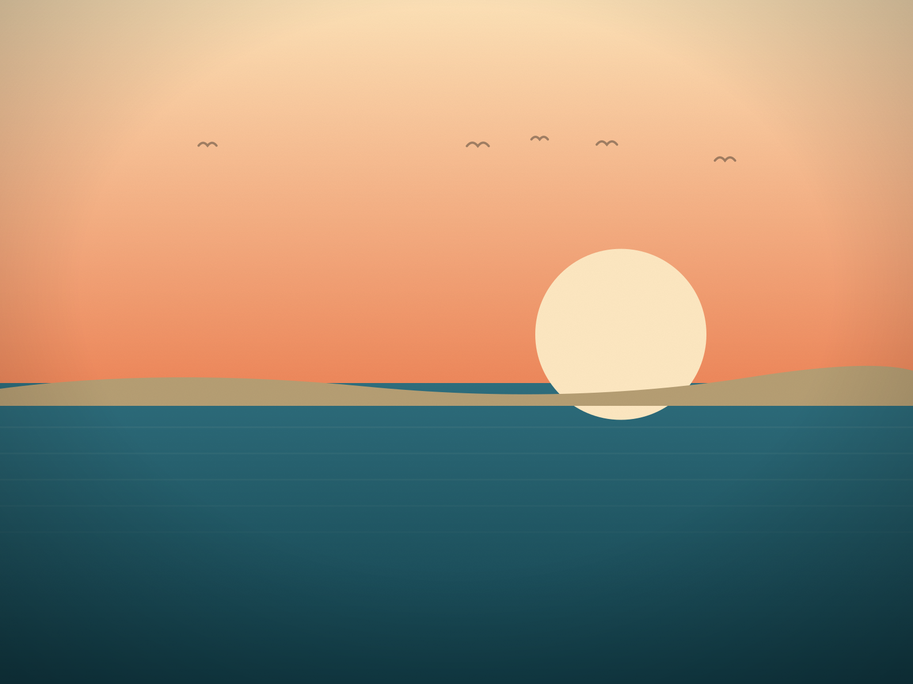

Bethany's bandstand sits at the center of a boardwalk short enough that you can hear the music from almost any bench on it. On a concert night, the chairs start appearing by 7 — folding, low-slung, the kind that live in a trunk all summer — staked out in a loose semicircle facing the stage.
The bands vary week to week: beach music one night, a cover band leaning hard into 80s hits the next, occasionally something closer to bluegrass. Nobody seems to come for a specific act so much as for the ritual of it — ice cream from the shop across the street, a slow walk down to the water between sets, kids running the same fifty feet of boardwalk back and forth until the second song starts.
What's notable is what doesn't happen. Nobody's rushing off to the next thing. There's no line to get in, no ticket, no VIP section. By 9:30, when the last song wraps up, half the crowd is still sitting there finishing a conversation, in no particular hurry to fold the chairs back up.
If Rehoboth is the Delaware beach for a big night out, Bethany's bandstand is the answer for people who want the whole evening to feel like a long exhale instead.